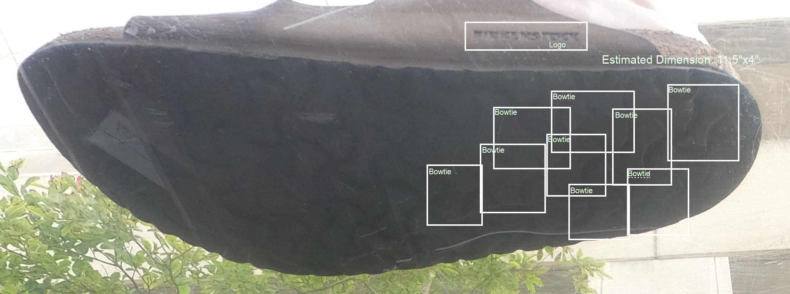
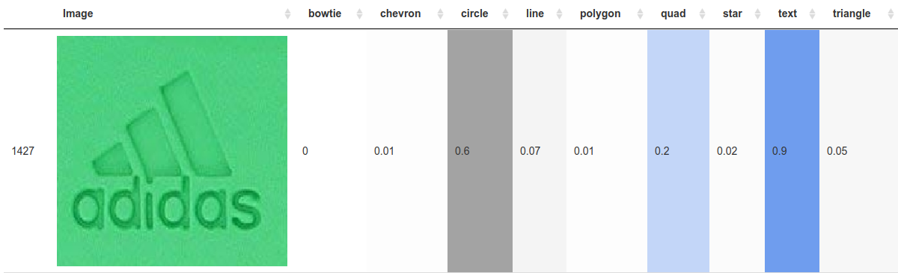
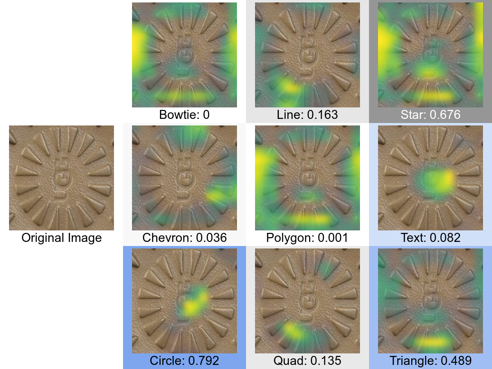
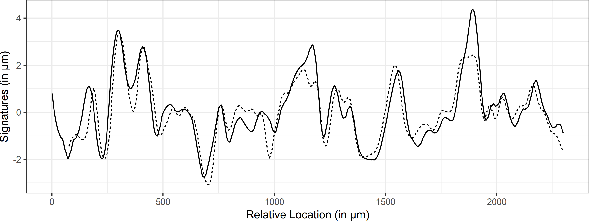
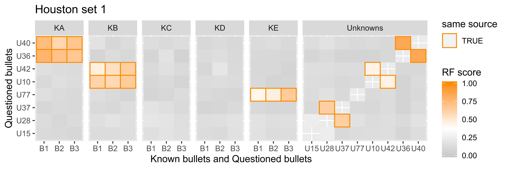

Reproducible Science
Statistics, Forensics, and the Law
August 28, 2022
Algorithms and Statistical Learning
Footwear Evidence
No current basis for making quantitative assessments of footwear frequency in the population
95% of footwear comparisons use make/model/tread pattern features
class characteristics are shared by multiple items and are not individually identifiableGoal: Develop a way to collect data about footwear/tread patterns
- Equipment
- Statistical analysis method




Algorithms and Statistical Learning
Bullet and Cartridge Case Analysis
Develop algorithms for matching bullets and cartridge cases
Compare these algorithms to examiner performance
Informally, the bullet algorithms are much better – publications are in preparationAlgorithms must be explainable
- Visual diagnostics to see how things “went wrong” if errors are made
- Examiners (and eventually, juries) must conceptually understand how the decision was made



Assessing Error Rates
| Examiner Decisions | |||
| Reality | Identification (match) |
Inconclusive | Elimination (no match) |
| Same Source | ✅ | ü§® | ❌ |
| Different Source | ❌ | ü§® | ✅ |

Acknowledgements
Collaborators
- Heike Hofmann
- Alicia Carriquiry
- Kori Khan
Students
- Rachel Rogers
- Muxin Ha
- Joe Zemmels
- Jayden Stack
- Miranda Tilton
This work was funded (or partially funded) by the Center for Statistics and Applications in Forensic Evidence (CSAFE) through Cooperative Agreements 70NANB15H176 and 70NANB20H019 between NIST and Iowa State University, which includes activities carried out at Carnegie Mellon University, Duke University, University of California Irvine, University of Virginia, West Virginia University, University of Pennsylvania, Swarthmore College and University of Nebraska, Lincoln.